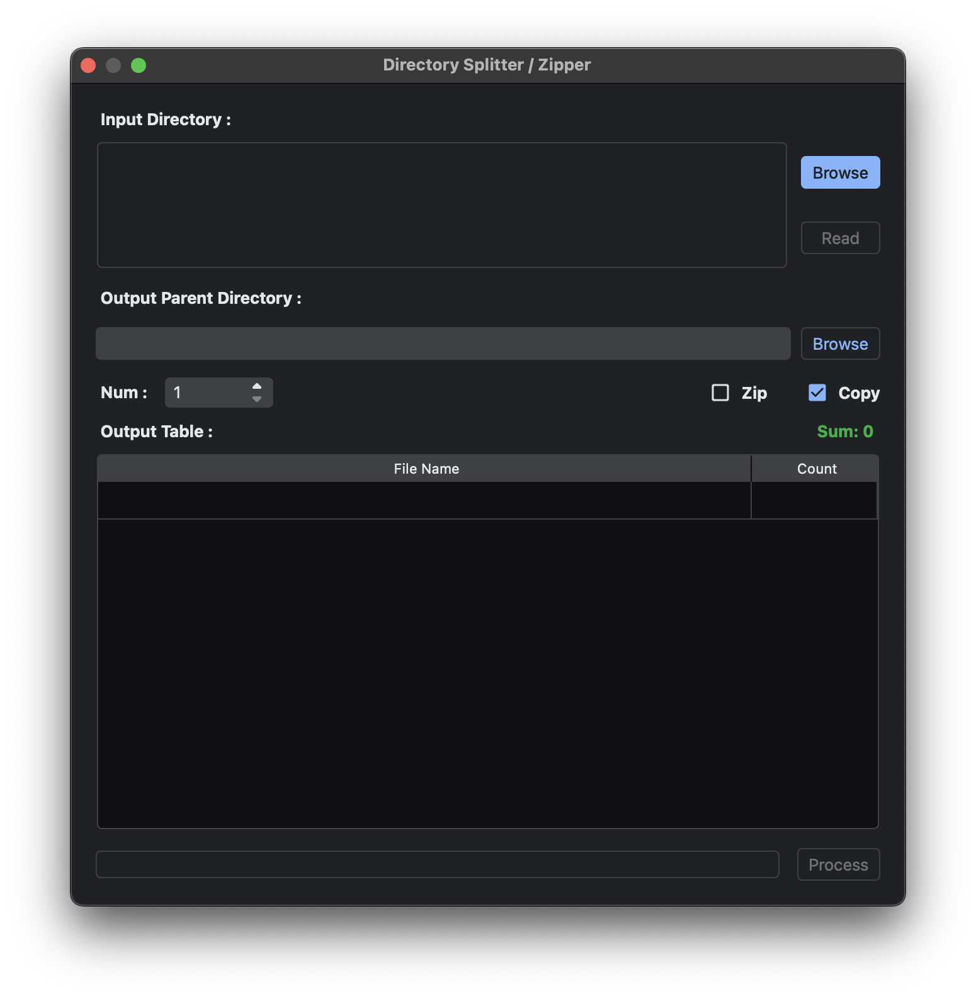
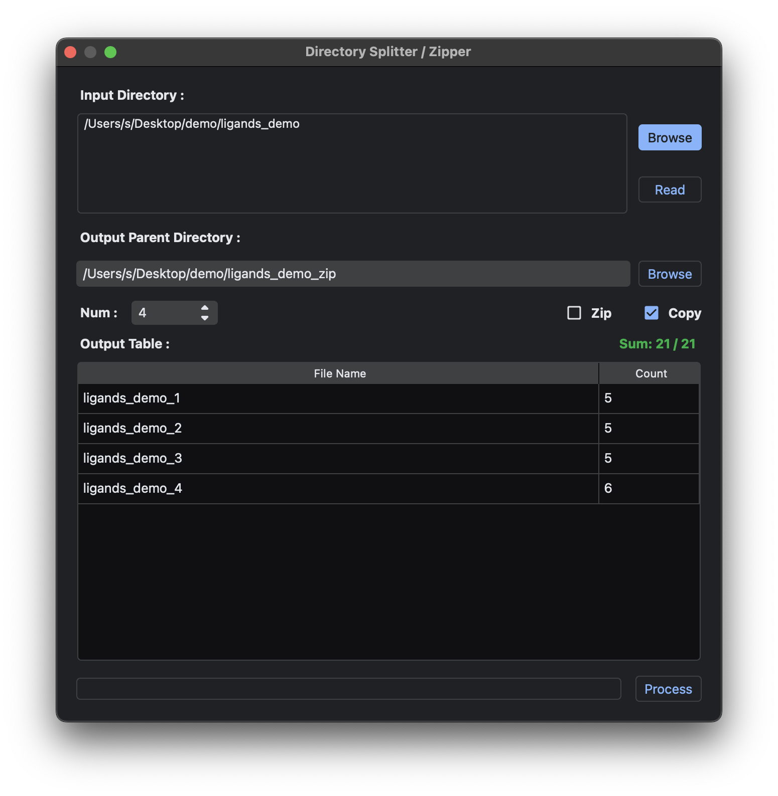
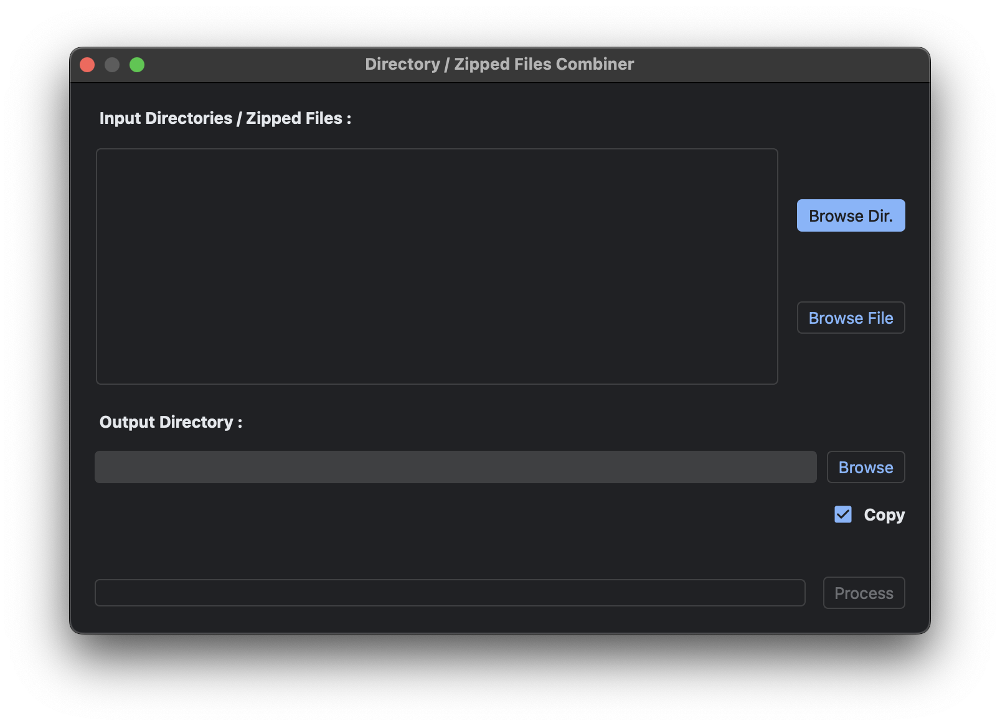
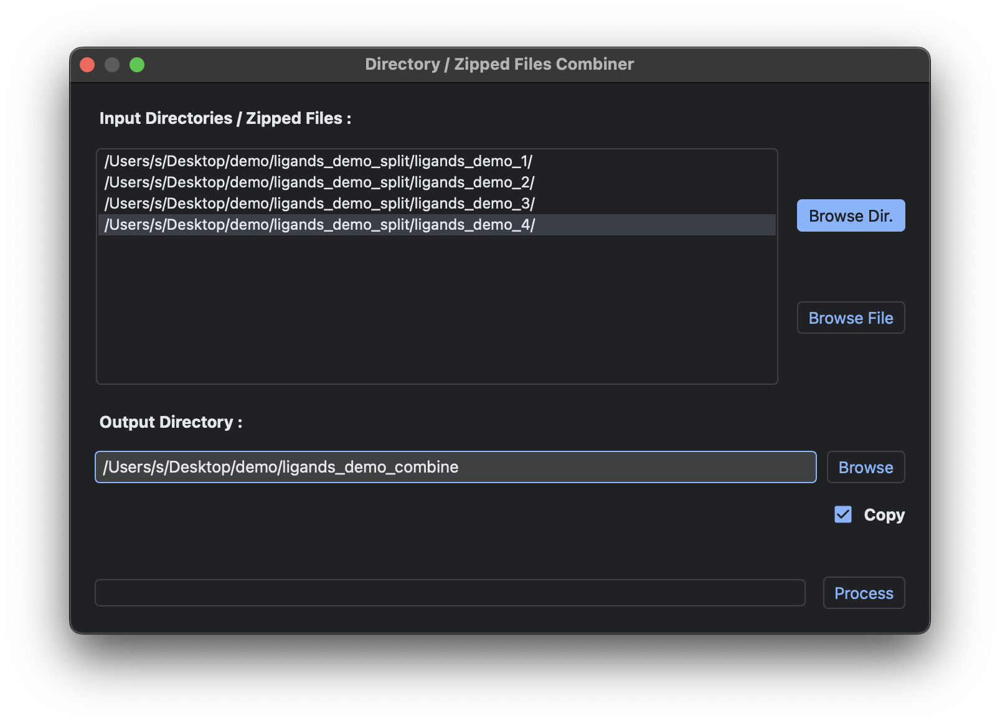
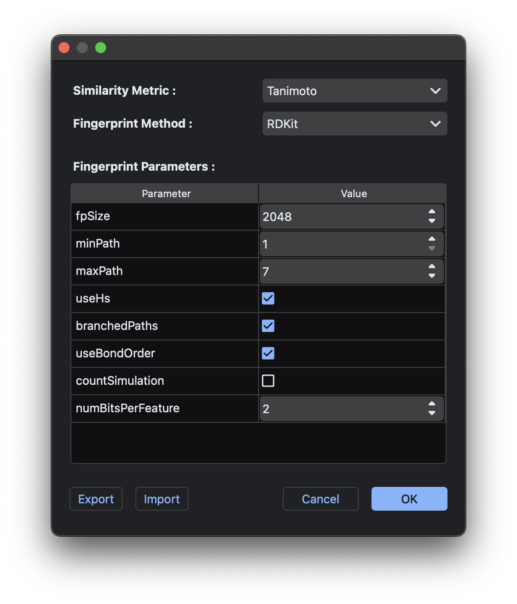

General Utilities¶
Split Directories into Multiple Directories/ZIP Files¶
To initiate this dialog, select General Utilities → Split Directories.

As with most functions in MolDocker, users can Browse & Select or Drag & Drop target directories containing ligands into the input list. An Output Parent Directory is also required to store the resulting split directories or ZIP files. The parameter Num determines the number of final directories or ZIP files created. The zip checkbox decides whether the files are zipped (required for uploading ligands to websites), and the Copy checkbox determines whether to copy or move the original files.

Pressing Read will scan the first layer of files/subdirectories in the listed input directories. The Output Table below displays the output directory/ZIP file names and their respective file counts. Users can modify the File Name and Count of each row by double-clicking the cells. Ensure that the sum of the counts (M) matches the total files/subdirectories (N) as shown in the Sum: M/N label, or else the Process button cannot be pressed. Once M = N, press Process to split the input files into directories or ZIP files. The output will look like this:
Output Parent Directory
├── ligands_demo_1
│ ├── 1.pdbqt (file)
│ ├── 2.pdbqt (file)
│ ├── 3 (subdirectory)
│ │ └── OTHER FILES/SUBDIRS...
│ ├── 4.pdbqt (file)
│ └── 5.pdbqt (file)
│
├── ligands_demo_2
│ ├── 6.pdbqt (file)
│ ├── 7.pdbqt (file)
│ ├── 8.pdbqt (file)
│ ├── 9.pdbqt (file)
│ └── 10.pdbqt (file)
│
├── ligands_demo_3
│ ├── 11.pdbqt (file)
│ ├── 12.pdbqt (file)
│ ├── 13.pdbqt (file)
│ ├── 14 (subdirectory)
│ │ └── OTHER FILES/SUBDIRS...
│ └── 15.pdbqt (file)
│
└── ligands_demo_4
├── 16.pdbqt (file)
├── 17.pdbqt (file)
├── 18.pdbqt (file)
├── 19.pdbqt (file)
├── 20.pdbqt (file)
└── 21.pdbqt (file)
Combine Multiple Directories/ZIP Files into a Single Directory¶
To initiate this dialog, select General Utilities → Combine Directories.

Users can Browse & Select or Drag & Drop target directories/ZIP files into the input list and specify the output directory. The Copy checkbox determines whether the original files are copied or moved. For ZIP files, unchecking Copy will delete the input ZIP files.
Note: Files with the same name will be overwritten by the latest version, except for minimize.csv files in refinement results, which are concatenated into a single CSV file by default.

Using the previous splitter example, the final output will look like this:
Output Directory
├── 1.pdbqt (file)
├── 2.pdbqt (file)
├── 3 (subdirectory)
│ └── OTHER FILES/SUBDIRS...
├── 4.pdbqt (file)
├── 5.pdbqt (file)
├── 6.pdbqt (file)
├── 7.pdbqt (file)
├── 8.pdbqt (file)
├── 9.pdbqt (file)
├── 10.pdbqt (file)
├── 11.pdbqt (file)
├── 12.pdbqt (file)
├── 13.pdbqt (file)
├── 14 (subdirectory)
│ └── OTHER FILES/SUBDIRS...
├── 15.pdbqt (file)
├── 16.pdbqt (file)
├── 17.pdbqt (file)
├── 18.pdbqt (file)
├── 19.pdbqt (file)
├── 20.pdbqt (file)
└── 21.pdbqt (file)
Similarities and Fingerprints¶
MolDocker supports 10 similarity metrics and 8 fingerprinting methods. To configure these, select General Utilities → Fingerprint / Similarity Settings.

Similarity Metrics¶
The following similarity metrics are supported:
- Tanimoto
- Dice
- Braun-Blanquet
- Cosine
- Kulczynski
- McConnaughey
- Rogot-Goldberg
- Russel
- Sokal
- Tversky
Fingerprinting Methods¶
The following fingerprinting methods, implemented in RDKit, are supported:
- Morgan
- RDKit
- Topological torsion
- Atom pair
- Layered
- Pattern
- Avalon
- MACCS
If the selected fingerprinting method has configurable parameters, they will appear in the Fingerprint Parameters table below.
Saving and Loading Settings¶
Click Ok to apply the selected settings. These settings will be used for:
- Converter → Compare Molecules
- Converter → Convert Molecules (MDDB Format)
- Shopper → Local Database Search
Users can save the settings to a JSON setting file or import previously saved JSON settings using the Export and Import buttons.
Important: For Converter → Compare Molecules and Shopper → Local Database Search, the fingerprinting method and parameters used to generate the input MDDB files must match the current settings. If they do not, the MDDB files will be ignored. Hover over an MDDB file name in the imported list/table to see which methods or parameters differ from the current settings.